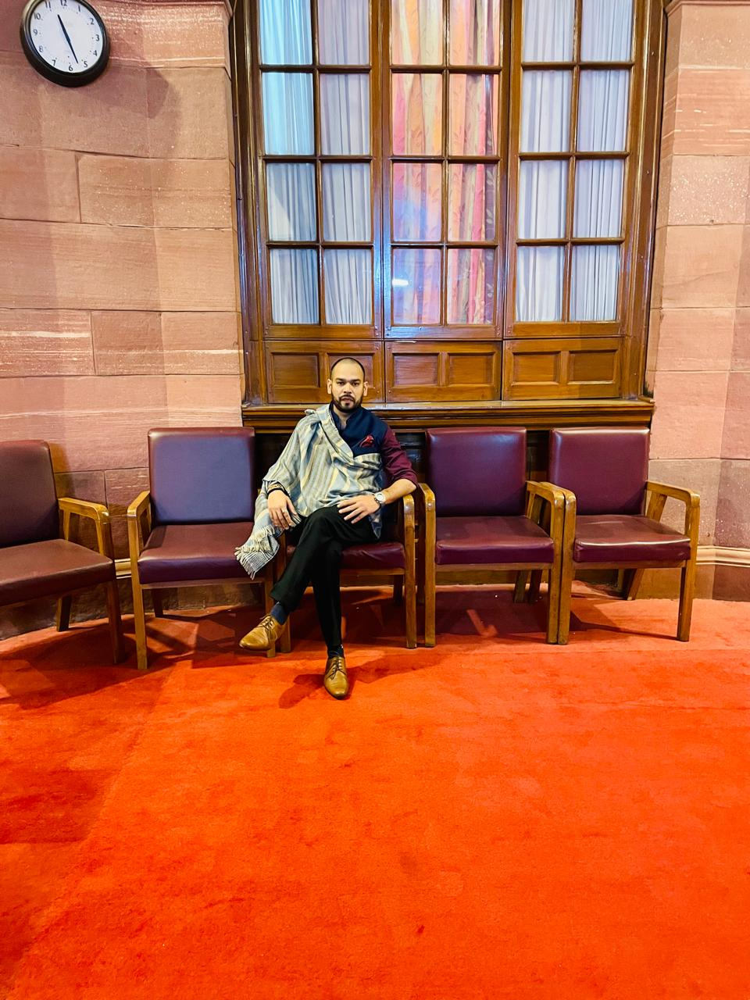
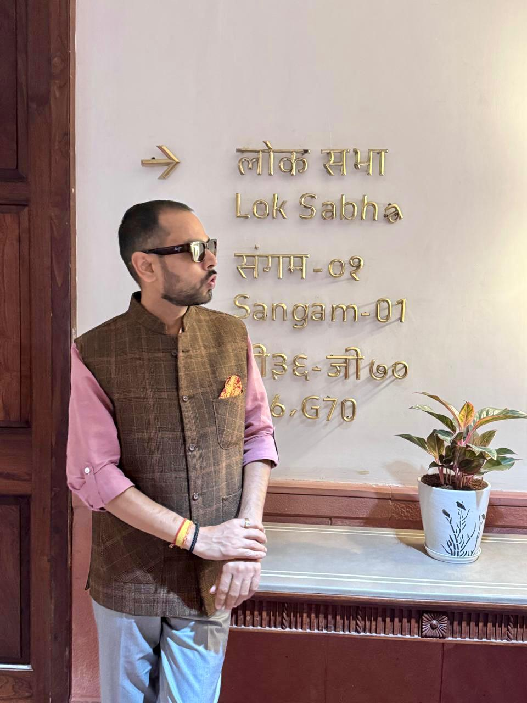
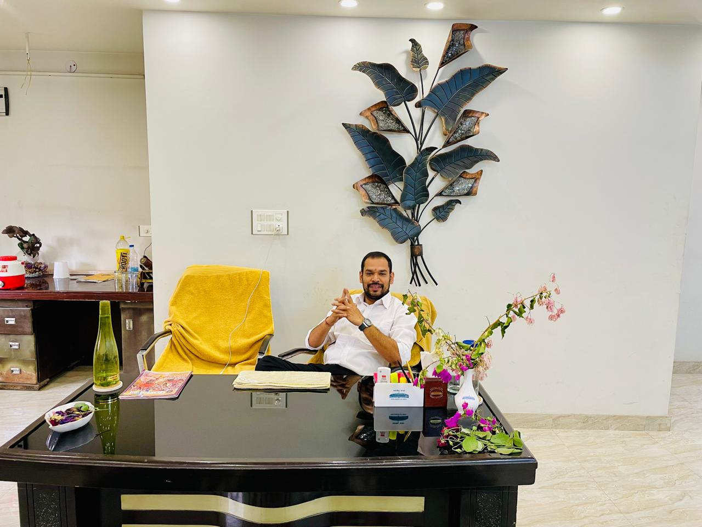

Dadri | Greater Noida | BJP Leadership
BJP Leader, political professional, and advocate with a commanding public presence.
Abhishek Kaushik represents a refined political profile shaped by party responsibility, public confidence, institutional credibility, and disciplined leadership across Dadri and Greater Noida.
About
A refined political identity built for influence, organisation, and trust.
Abhishek Kaushik is a BJP Leader and political professional from Dadri, Greater Noida, known for combining organisation-based politics, visible public engagement, and a disciplined advocate's background. His profile is positioned around seriousness, access, and leadership suited to high-level political communication.
As General Secretary, Bharatiya Janata Party, Dadri, he carries a public image built for credibility, stature, and long-term relevance in political and civic life across Gautam Buddha Nagar.
Positions & Offices
Official responsibilities presented with clarity and authority.
01
Political Leadership
General Secretary, Bharatiya Janata Party, Dadri, with a leadership profile centered on organisation, outreach, and political discipline.
02
Legal Profession
Advocate and Member, District & Session Court Bar Association (Regd.), Gautam Buddha Nagar, reinforcing institutional credibility.
03
Organisational Role
District President, Uttar Pradesh Udyog Vyapar Pratinidhi Mandal (Regd.) Youth, Gautam Buddha Nagar.
04
Professional Network
Official office in Dadri and lawyer's chamber in Surajpur supporting political meetings, legal work, and public coordination.
Public Life
Political stature is built through visible leadership and serious presence.
This section highlights defining professional moments across public speaking, institutional reach, and executive-style office presence that reinforce a high-value political profile.

Featured Address
Speaking with authority, message discipline, and political confidence.
This is a defining professional moment that reflects statesmanlike communication, public command, and the stature of a serious political figure.

Institutional Presence
Institutional access that reinforces stature, reach, and recognition.

Office Profile
A professional moment shaped by order, credibility, and executive presence.
Gallery
Leadership, public influence, and personal polish in one curated archive.
The gallery keeps premium political visuals at the front while balancing relatability with discipline, polish, and public recall.
Official Contact
Office, chamber, and direct contact details.
For political meetings, public engagements, legal appointments, or organisational coordination, the official details below can be used for direct communication and office visits.
Social Presence
A digital identity designed for reach, authority, and constituency recall.
Use this space to connect official platforms, campaign communication, media visibility, and public updates in one disciplined political voice.